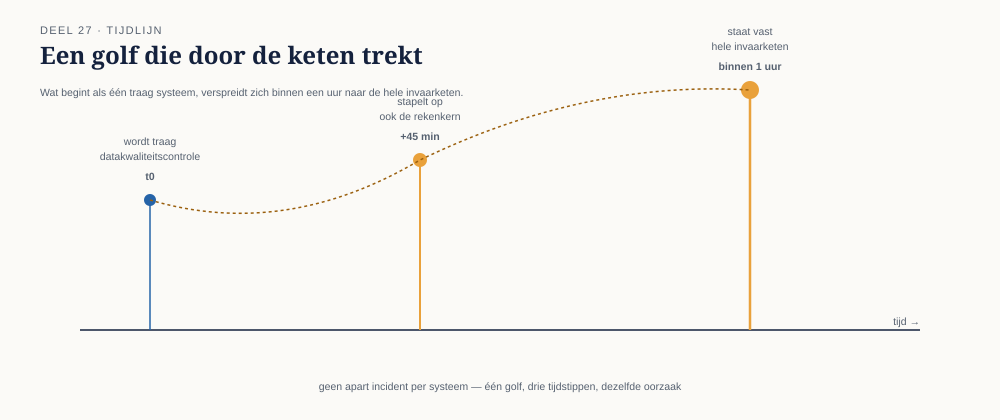
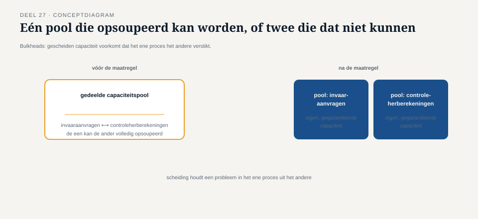

Deel 27 — Resilience patterns in ketens: circuit breaker, bulkhead, backpressure
Reader · Ductus-cursus Enterprise Integration Patterns · niveau 3 (expert) · deel 27 van 30
27.0 Een langzaam systeem dat een gezond systeem meesleepte
Twee weken na het poison-message-incident van deel 26 deed zich een ander soort probleem voor: het datakwaliteitscontrolesysteem begon, door een onverwacht hoog volume aan gelijktijdige invaaraanvragen tijdens een piekperiode, structureel trager te reageren dan normaal — niet vastgelopen zoals bij een poison message, maar consistent, aanhoudend traag, ruim boven de normale verwerkingstijd. De rekenkern, die op elke validatie-uitkomst wachtte voordat hij verderging (deel 25's georkestreerde, blokkerende afhankelijkheid), begon zelf ook capaciteit vast te houden voor elke wachtende aanvraag — met als gevolg dat, binnen een uur, ook de rekenkern zelf overbelast raakte en trager werd voor iedereen, inclusief aanvragen die niets met de piekbelasting te maken hadden.
Dit is een ander patroon dan een poison message: geen individueel, schadelijk bericht, maar een structurele overbelasting van één component die zich, via bindende afhankelijkheden, verspreidt naar andere, op zichzelf gezonde componenten — een cascade-effect. Dit deel behandelt drie patronen die dit voorkomen, elk bekend uit de synchrone wereld van de API-cursus, hier vertaald naar hun asynchrone vorm.

27.1 De circuit breaker, asynchroon
De circuit breaker uit de API-cursus onderbreekt, bij een synchrone aanroep, actief de verbinding naar een structureel falende of trage downstream-dienst — na een aantal mislukkingen "opent" het circuit, en verdere aanroepen falen onmiddellijk in plaats van te wachten op een timeout, totdat een periodieke testaanroep aangeeft dat de dienst hersteld is.
In een asynchrone keten is de vertaling niet triviaal, omdat er, anders dan bij een synchrone aanroep, geen aanvrager is die "wacht" op een direct antwoord (deel 3) — het circuit-breaker-concept moet daarom worden toegepast op de plek waar een asynchrone consument alsnog blokkerend of semi-blokkerend gedrag vertoont, zoals bij Meridiaan's georkestreerde afhankelijkheid tussen rekenkern en datakwaliteitscontrole (deel 25), waar de rekenkern feitelijk wacht op een antwoord voordat hij verdergaat.
De asynchrone circuit breaker werkt hier als volgt: de orkestrator (deel 17) die de afhankelijkheid tussen rekenkern en datakwaliteitscontrole beheert, houdt het slagingspercentage en de antwoordtijd van recente aanroepen bij. Zodra een drempel wordt overschreden (bijvoorbeeld: meer dan een vastgesteld percentage aanroepen duurt langer dan een acceptabele grens), "opent" het circuit: nieuwe aanvragen aan het datakwaliteitscontrolesysteem worden niet langer verstuurd, maar onmiddellijk teruggekoppeld als "tijdelijk niet beschikbaar" — met een expliciet, apart bericht naar de aanvrager (in lijn met deel 3's non-blocking-principe), in plaats van dat de rekenkern zelf capaciteit blijft vasthouden in afwachting van een antwoord dat toch te lang zou duren.
Kernzin 27 van de cursus: een asynchrone circuit breaker onderbreekt niet de verbinding zelf (die blijft, als kanaal, gewoon bestaan) maar het wachten op een tijdig antwoord — hij beschermt de wachtende partij, niet het kanaal.
27.2 De bulkhead
Een bulkhead (naar het scheepvaartconcept van waterdichte compartimenten die voorkomen dat één lek het hele schip doet zinken) isoleert capaciteit tussen verschillende soorten verkeer, zodat overbelasting door het ene type verkeer niet automatisch de capaciteit voor een ander type verkeer opeet.
Bij Meridiaan bleek het incident van 27.0 verergerd doordat de rekenkern één gedeelde capaciteitspool gebruikte voor zowel reguliere invaaraanvragen als voor een tweede, minder kritieke functie: het herberekenen van reeds ingevaren aanspraken ten behoeve van periodieke controlerapportages. Toen de piekbelasting toesloeg, verbruikten beide soorten aanvragen dezelfde, beperkte capaciteit — de kritieke, wettelijk tijdgebonden invaaraanvragen wachtten letterlijk achter de minder urgente controleherberekeningen.
Een bulkhead lost dit op door aparte capaciteitspools toe te wijzen aan elk type verkeer: een vaste, gereserveerde capaciteit voor reguliere invaaraanvragen die nooit door controleherberekeningen kan worden opgesoupeerd, en een aparte, kleinere pool voor de minder kritieke functie. Dit is, conceptueel, een asynchrone toepassing van hetzelfde partitioneringsprincipe dat deel 8 introduceerde — alleen daar ging het om volgordegarantie per object, hier om capaciteitsisolatie per verkeerssoort.

27.3 Backpressure
Backpressure is het mechanisme waarmee een trage of overbelaste consument expliciet aan zijn zender(s) signaleert dat hij minder snel kan verwerken dan er wordt aangeboden, zodat de zender zijn eigen tempo kan aanpassen — in plaats van dat de consument onder de druk bezwijkt, of dat berichten zich onbeheerst opstapelen in een steeds groter wordende wachtrij.
Dit is fundamenteel anders dan de circuit breaker (27.1), die een verbinding volledig onderbreekt bij structureel falen — backpressure is een geleidelijk, continu signaal, bedoeld voor de situatie waarin een consument nog wel functioneert, maar niet op het tempo dat wordt aangeboden. Bij Meridiaan is dit toegepast op de relatie tussen de mutatie-invoerbronnen (deel 5: portaal, csv-batch, zelfbedieningsportaal) en de rekenkern: als de rekenkern's wachtrij een ingestelde drempel nadert, signaleert hij expliciet terug naar de invoerbronnen dat zij hun aanlevertempo moeten vertragen — bijvoorbeeld door de csv-batchupload zijn volgende batch pas na een langere pauze te laten aanbieden.
Zonder backpressure zou de wachtrij onbeperkt blijven groeien totdat een harde limiet wordt bereikt (geheugen vol, opslag vol), met een abrupte, oncontroleerbare storing als gevolg — vergelijkbaar met hoe een niet-ingestelde message history (deel 15) onbeperkt kan groeien. Met backpressure ontstaat een gecontroleerde vertraging die zich evenredig over de hele keten verdeelt, in plaats van een oncontroleerbare instorting bij één component.
Vuistregel: een circuit breaker beschermt tegen structureel falen (aan of uit); een bulkhead beschermt tegen verdringing tussen verkeerssoorten (gescheiden ruimtes); backpressure beschermt tegen geleidelijke overbelasting (gecontroleerd vertragen). Alle drie zijn nodig, want ze beschermen tegen verschillende faalpatronen.
Samenvatting van deel 27
- Overbelasting van één component kan, via bindende afhankelijkheden, cascaderen naar andere, op zichzelf gezonde componenten — een ander patroon dan het geïsoleerde faalgedrag van een poison message (deel 26).
- De circuit breaker, asynchroon vertaald, onderbreekt niet het kanaal maar het wachten op een tijdig antwoord, en geeft de aanvrager een expliciet, non-blocking signaal in plaats van te blijven wachten.
- Een bulkhead isoleert capaciteit tussen verkeerssoorten, zodat minder kritiek verkeer nooit de capaciteit voor kritiek, tijdgebonden verkeer kan opsouperen.
- Backpressure laat een overbelaste consument expliciet zijn tempo terugkoppelen naar zenders, voor een gecontroleerde vertraging in plaats van een oncontroleerbare instorting.
- De drie patronen beschermen tegen verschillende faalpatronen en zijn complementair, niet inwisselbaar.
Vooruitblik
Deel 28 verlaat individuele incidentbestrijding en behandelt governance en lifecycle van een event backbone op de schaal die de Stelselovergang vereist: versiebeleid, deprecatie, en de impact van wijzigingen op een groeiend aantal, deels wettelijk verplichte consumenten.